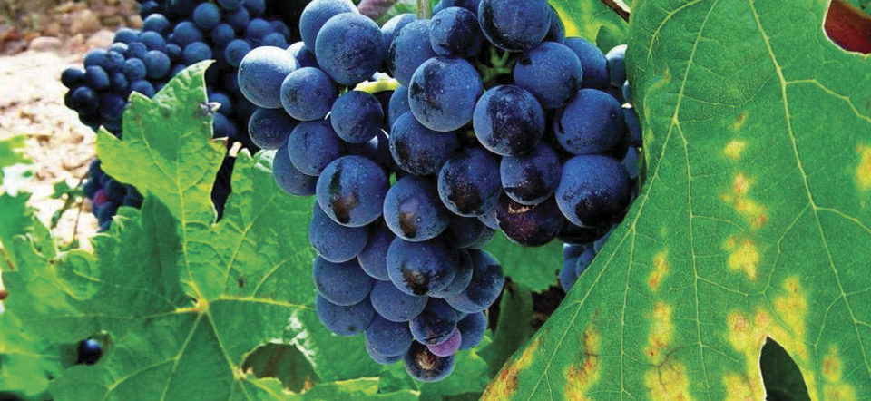
 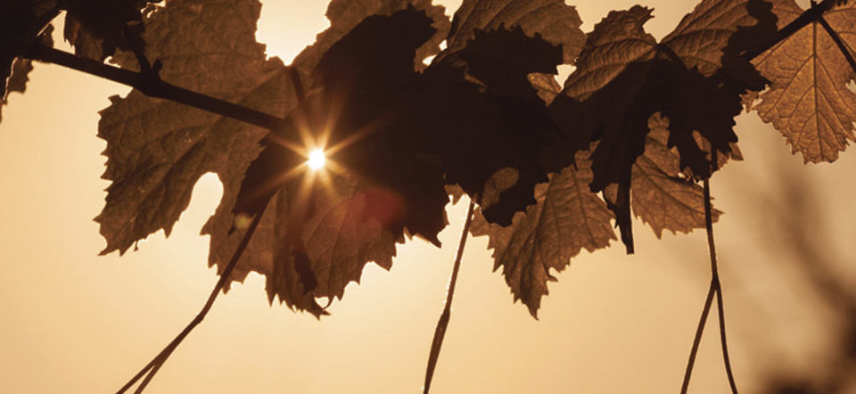
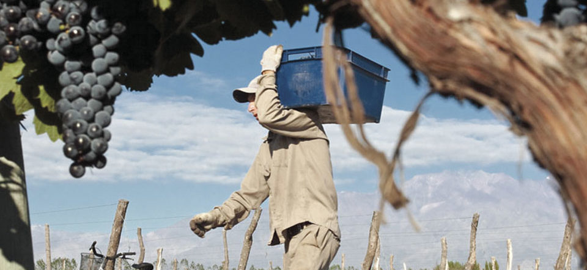
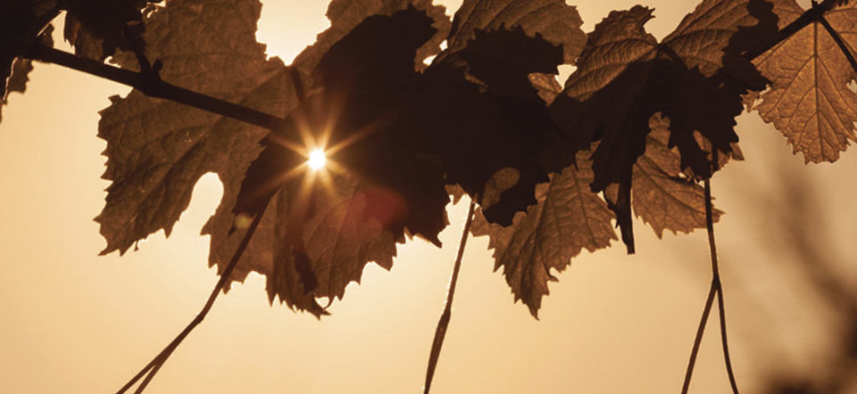
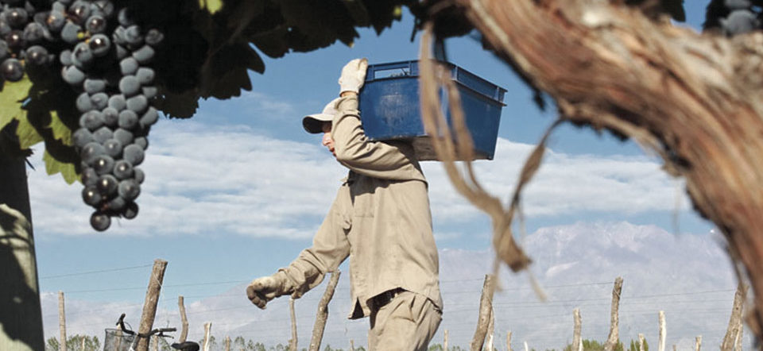
 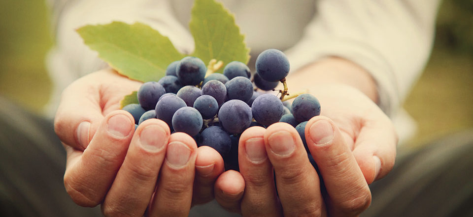
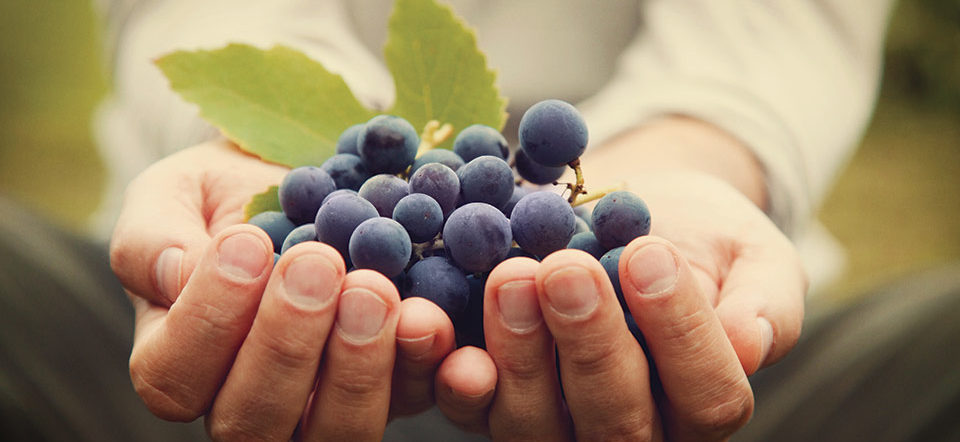


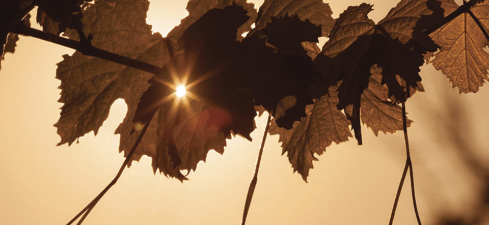
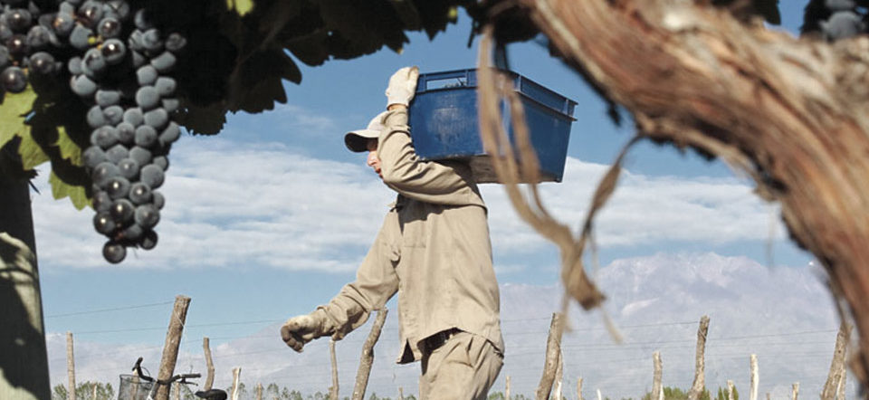
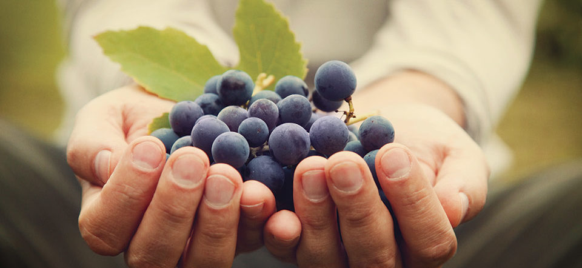
CONJUGAMOS LO MEJOR DE LA NATURALEZA CON EL ESFUERZO DE NUESTRA GENTE, TRABAJAMOS PARA LOGRAR VINOS TEMPERAMENTALES, MOMENTOS ÚNICOS, PERO SOBRE TODO, EXPERIENCIAS.
Guiados por la tradición, en Bodega Estancia Mendoza brindamos una especial atención a nuestras cepas y al terruño que las cobija. Ese afán nos llevó a situarnos al sudoeste de la ciudad de Mendoza, en el conocido Valle de Uco, específicamente en Tupungato, el departamento más alto de este hermoso Valle, donde su geografía se destaca por las condiciones privilegiadas para el cultivo de viñedos, produciendo uvas únicas para la elaboración de vinos de alta gama, expresivos y de personalidad.
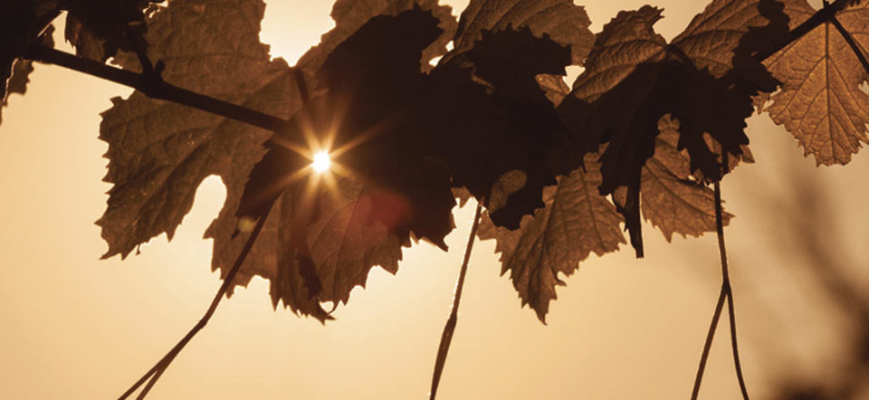
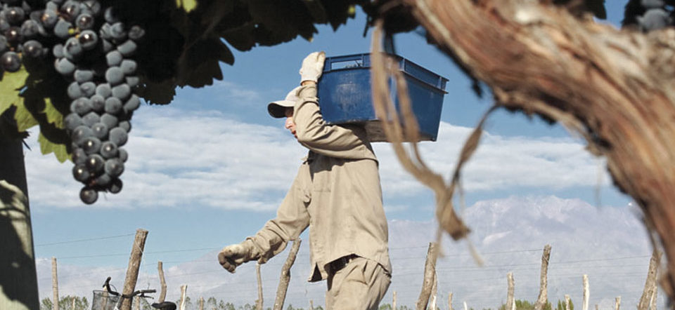
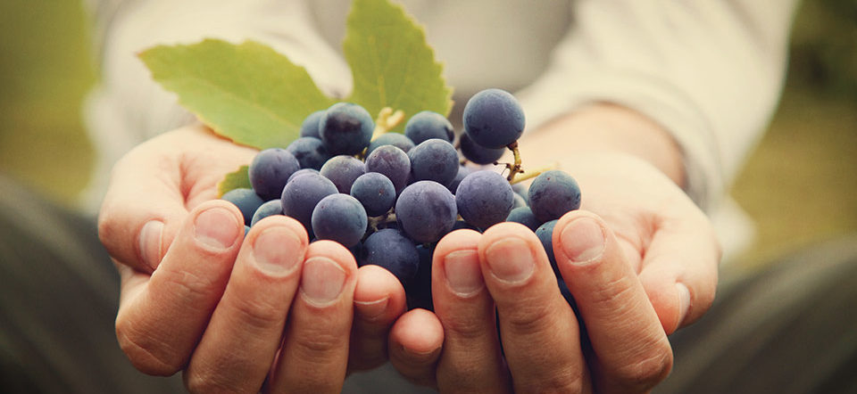